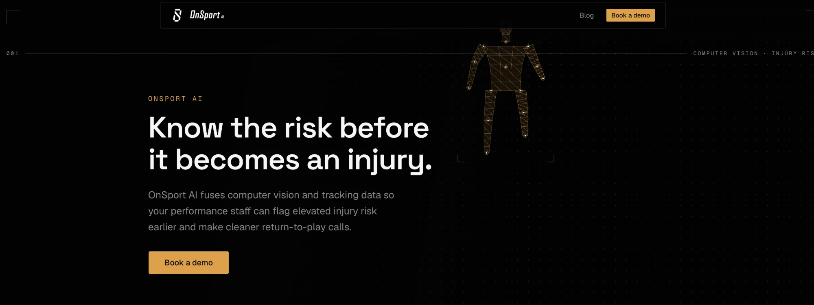
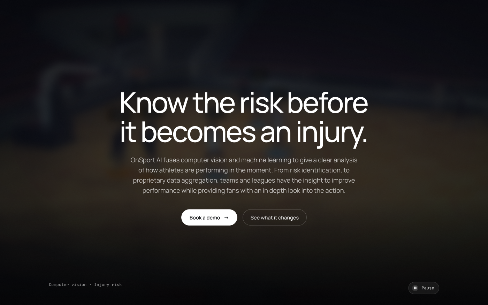
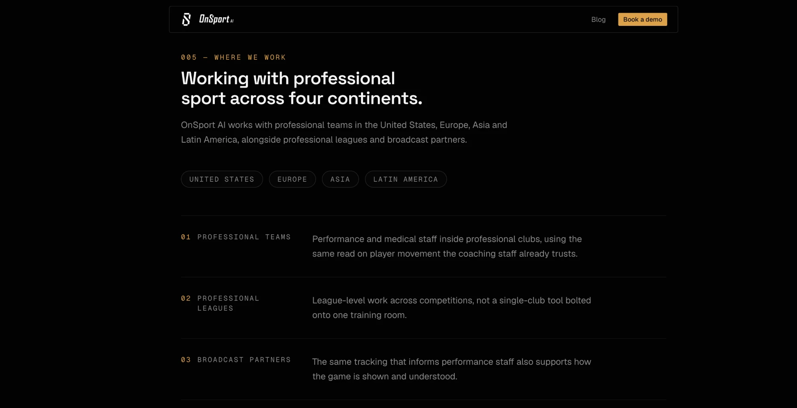
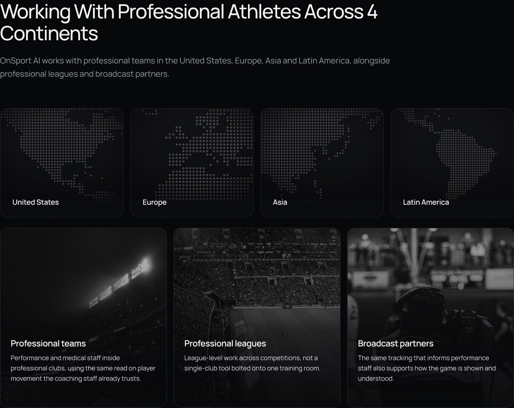
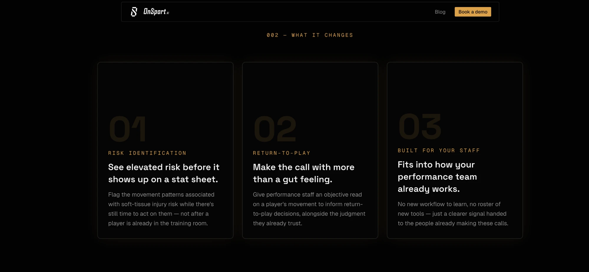
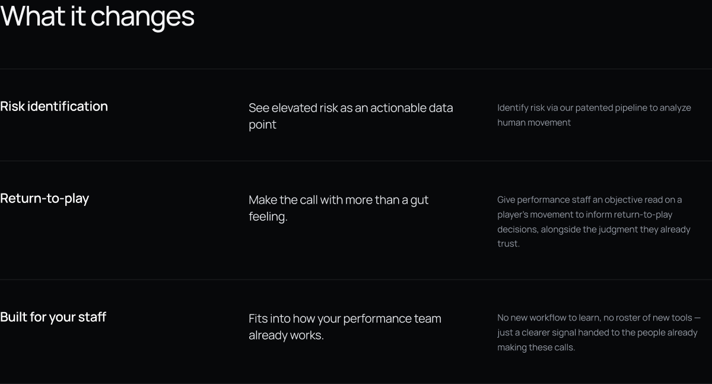
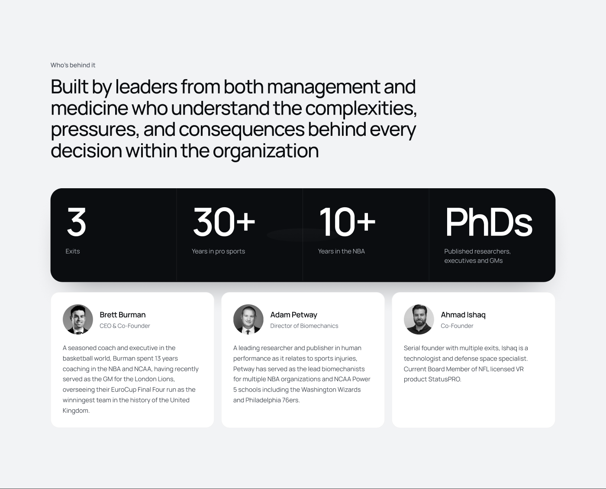
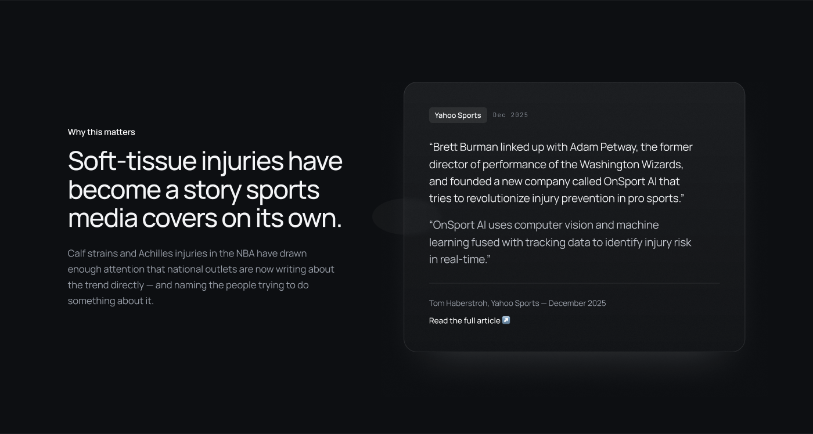

Client project / 03
OnSport AI uses computer vision and machine learning to flag elevated injury risk in professional athletes. I designed the launch site solo in Figma, then used Claude Code as my build partner to ship it live at onsport.ai, in two weeks, from first brief to launch.
Visit onsport.ai ↗The brief
The brief was a complete redesign: replace what OnSport AI had with something modern, sleek and built for the sports-tech category, a site that would actually drive engagement rather than just document the product. OnSport AI's pitch itself is narrow and real: fuse computer vision with biomechanics to flag soft-tissue injury risk before it happens, built by people who've actually run performance departments in the NBA. The new site had to convince skeptical GMs and performance staff that a single-purpose tool from a new company deserved a conversation, against competitors with a decade of credentialing behind them, and it had to exist in two weeks.
Credibility problem
A brand-new company with no track record, competing for trust against platforms that have been collecting Olympic-medal stats for 20 years.
Focus problem
OnSport does one thing. Next to a competitor listing a dozen modules, "we do one thing" needed to read as conviction, not as a gap in the product.
Timeline problem
Two weeks, solo, from first brief to a live site a sales team could point prospects to.
Research
Orreco is the category's established player: 10+ modules (Biomarkers, Motion Signal, Recovery Labs, Women's Performance, Travel, Wellness and more), all accessed through one dashboard, backed by heavy credentialing, 20+ years, 145+ countries, 45+ Olympic medals, an 85% accuracy claim, and a long run of client testimonials.
What Orreco does
Positions as a complete sports-science suite: a module for nearly every performance and medical use case, proven by two decades of Olympic and elite-sport deployments.
The opening it leaves
Breadth comes at the cost of a clear single story. Scanning the site, the product is impressive but diffuse, a dozen modules competing for the same page.
The decision it drove
Don't compete on breadth against a decade of head start. Compete on focus: one problem, stated once, carried by the people who've lived it.
Why this shaped the site
Every section of OnSport's site reinforces one claim rather than listing features: one headline problem (injury risk), three audiences (teams, leagues, broadcasters), and credibility carried by three named leaders with direct NBA and NCAA pedigree, rather than a citations page of stats. Narrow, on a two-week timeline, was also the only honest option, there wasn't time to build a module-by-module showcase even if that had been the right call.
How this was built
I was brought on as the freelance product designer, working solo with no developer handoff. Every screen was designed in Figma first: the hero, the audience split, the leadership section, the "what it changes" breakdown, the press mention, the demo-request form. Once the design system and key screens were signed off, I used Claude Code as my build partner to turn that Figma file into the live site at onsport.ai, inside the same two-week window.
Unlike a longer engagement with a dedicated developer, the tight timeline meant design and build had to run close together rather than as two clean phases, catching layout and content issues in the live build fast enough to still fix them before launch.
Process
Timeline: 2 weeks, solo
Days 1-3
Days 4-8
Days 9-14
Visual design
The previous site leaned on amber everywhere, the nav CTA, numbered section indices (005, 004, 003...), the stat values, even the hero's centrepiece: a wireframe skeleton mesh tracking a body in glowing dots and lines. It read more like diagnostic software than a company three former NBA people would put their names behind. The redesign drops colour entirely: black, white and grayscale photography, nothing else. Restraint carries the page instead of an accent colour doing the work. I dropped the numbering, swapped the literal wireframe for a motion hero, and moved the audience section from text badges and a numbered list to real broadcast photography and dot-matrix maps. The result reads closer to a sports documentary than a dashboard, which is what "fits the sports-tech sector" actually meant here. This page matches that same black-and-white palette, so clicking through to onsport.ai feels continuous rather than like landing somewhere else.
Near-black base
Surface
Muted grey
Off-white text
Before → after
Before

After

A literal wireframe reads as "here's our technology." A blurred motion shot of real play reads as "here's the sport you already care about." The second one is the one a GM scrolls past slower.
Before

After

Four pill badges and a numbered list tell you the facts. Four maps and three photographs of real stadiums and broadcast booths let you feel the scale before you've read a word.
Before

After

Giant "01/02/03" watermarks behind each card competed with the actual claim. Stripping it back to a plain table, the least decorated section on the page, let the three sentences that matter most do the work unopposed.
The site
Screens as designed in Figma and shipped live at onsport.ai.
Audience
One scroll to establish who this is for and that the reach is real, not a single pilot club. The dot-matrix maps keep the dark palette consistent instead of breaking it with a bright stock map.

Credibility
The one deliberate break from the dark theme: a bright, almost clinical section for the founders, so the people carrying the credibility get a different visual register than the product pitch around them.
The pitch
A plain three-row table instead of feature cards, deliberately the least decorated section on the page. After the hero's motion and the leadership section's photography, the actual claim gets to land without competing for attention.

Proof
A direct quote and byline from Yahoo Sports, sitting where a generic testimonial would normally go. Verifiable third-party coverage carries more weight than a quote the company wrote about itself.
Outcome
Reflection
Two weeks solo meant real tradeoffs: no time for a formal usability pass before launch, and the demo-form copy was written once rather than tested against a few variants. What made the timeline survivable was the same decision the competitor analysis drove, one clear story told five ways, rather than a sprawling site trying to cover everything the product could eventually do.